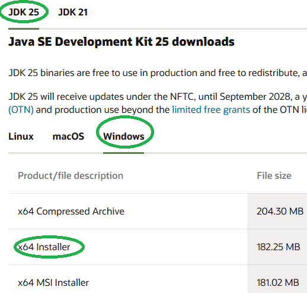
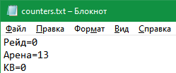
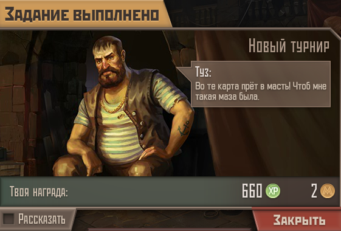
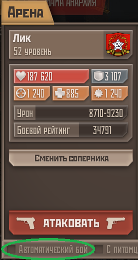

====================================== M E T R O B O T v1.00 ======================================
Программа “MetroBot” — это автоматический помощник-кликер для браузерной Flash-игрушки Метро 2033. Работает с игровыми приложениями в соцсетях МойМир и ВКонтакте. Программа кликает вместо игрока по заранее определённым координатам кнопок и выдерживает паузы до следующей серии кликов. Для удобства повседневной работы за компьютером, после серии кликов программа сворачивает игровые окна, а через ~5 минут снова разворачивает их для очередного сражения. В это время можно полноценно использовать ПК.
Поддерживается до 4 игровых окон (бойцов). Возможна работа только с выбранными окнами из числа открытых. Например, когда в одном из окон активирован VIP-режим, то нет смысла автоматизации режима Арена: игра сама проводит автобои.
В версии 1.0 доступны следующие режимы: - бои на Арене; - бои в Клановых войнах; - участие в Рейдах; - набивание туннельных монстров (Ящеров и Пауков) в Туннелях.
“Метро 2033” - это не знаменитая 3D-игра с сиквелами, а примитивная игрушка класса “Моя любимая ферма”. Основана на книгах матёрого экстремиста Дмитрия Глуховского, игра написана при его участии. Большинство задач игры сводятся к 5-10 кликам раз в 5 минут, что у активного игрока занимает по 5..6 часов в сутки.
| До запуска программы МетроБот |
|---|
| Программа написана на языке Java. Чтобы запустить её, требуется скачать и установить JDK (Java Development Kit) отсюда: https://www.oracle.com/java/technologies/downloads/ Нужна версия для Windows x64. |
|  |
| Запустите установщик, нажимайте Next и т.п. В процессе установки убедитесь, что стоит галочка “Set JAVA_HOME variable” — это нужно, чтобы система знала, где лежит Java. |
| Запуск программы МетроБот |
Перетащите ползунок окна вниз так, чтобы полоска полностью скрылась из вида (допустимы 2-3 пикселя). 3. Запустите файл Start.bat. 4. При первом запуске появятся диалоговые окна с выбором режима, активных бойцов, указанием времени старта режимов.
МетроБот развернёт игровые окна в течение 1-2 секунд после установки времени (нажатия ОК в окне выбора времени).
Время старта: ваше местное, не московское. При выборе времени старта: если указать прошедшие часы:минуты, то МетроБот начнёт выбранный режим сразу после нажатия на кнопку Ок. Если указать будущие часы:минуты, то МетроБот стартует выбранный режим в указанное время. Для режимов КВ и Рейд рекомендуется устанавливать время старта с запасом в 1 минуту. Например, если КВ начинается в 17:40, то следует установить время старта на 17:41.
| Режимы игры |
|---|
| Для всех режимов: - время устанавливайте своё локальное (НЕ московское!); - для КВ и Рейдов ставьте время с запасом в 1 минуту. Если движуха начинается в 17:30, то установите 17:31; - МетроБот не учитывает сражения, сделанные вами самостоятельно! К примеру, если вы сами настреляли 10 боёв на Арене, а затем включили Метробот, то он сделает все 50 доступных боёв, т.е. будет тратить ваши жетоны; |
|  |
| - чтобы избежать этого, откройте файл counters.txt и вручную добавьте пройденные вами бои. Например, если игра говорит, что прошло 9 боёв, то откройте файл и впишите в строку Арена число 9 (без пробелов). То же самое про КВ и Рейды. - Метробот не умеет закрывать окна-«нежданчики», например – завершённую ежедневку, повышение уровня бойца или питомца, «аномалии» и т.п. Программа просто игнорирует их. Программа умеет закрывать уведомления о завершённой работе у Начальников станций, возвращаясь к кликам. |
|  |
| - В режимах КВ, Рейд и Арена отсчёт времени идёт до следующего разворота окон, а не до выстрела. От разворота до «Атаковать» проходит ещё 3-5 секунд. |
| 1. Клановые войны. До 24 боёв в автоматическом режиме. Автоматически разворачивает окна до серии кликов, кликает, забирает погон, сворачивает окна до следующей пятиминутки. Время старта устанавливайте с запасом в 1 минуту (см. выше). 2. Рейд. До 12 боёв. Время старта устанавливайте с запасом в 1 минуту (см. выше). Окна разворачиваются и сворачиваются автоматически. 3. Арена. Проводит до 50 боёв в автоматическом режиме, раз в 5 минут. Разворачивает окна до начала серии кликов «Атаковать-Закрыть», кликает, собирает предмет коллекции, сворачивает окна. Не стоит включать этот режим при активированном VIP. |
|  |
| 4. Туннели: набивание туннельных монстров – ящеров и пауков в соответствующих тоннелях. В день доступно 20 пауков и 40 ящеров. Этот режим строго требует нахождение бойца на станции Парк Культуры (красные), а также отсутствие работы у Начстанции. Боец должен быть готов сразу же выйти в туннели! По окончании режима боец возвращается на станцию Парк Культуры (красные). Прохождение режима «Туннели» занимает порядка 45 минут, во время которых нежелательно пользоваться ПК: окна не сворачиваются и не разворачиваются, а программа кликает по ним раз в 10-15 секунд. Разумеется, требуется наличие всех необходимых пропусков вплоть до Проспекта Вернадского. Репутация у фракций не нужна. В этом режиме удобно прокачивать питомцев, однако МетроБот пока не умеет закрывать уведомление о достижении питомцем следующего уровня. |
config.txt - хранит параметры предыдущего запуска программы: mode=3 activeWindows=1 3 arena_start=20:00 kv_start=21:00
Время местное. Файл можно редактировать вручную, когда программа не запущена.
counters.txt - хранит счётчики работы программы, количество боёв на Арене, в Рейдах и в КВ. Рейд=0 Арена=36 КВ=22
Файл можно редактировать вручную, когда программа не запущена.
last_reset.txt - хранит дату последнего обнуления счётчиков. При первом запуске программы каждый день после 03:00 Мск, счётчики обнуляются автоматически.
| Системные требования |
|---|
| - Windows 7 или выше, x64 - Java 21 или выше |
Автор: Алексей Низамов
Благодарности:
Большое спасибо Егору, автору бесплатного Java-курса “Дорогу осилит идущий”: https://t.me/ViamSupervadetVadens, и коммьюнити этого курса. Ссылка на GitHub: https://github.com/KFalcon2022/lessons
Спасибо автору мира Метро-2033 Дмитрию Глуховскому :-) А также всем тестерам, которые помогали при разработке МетроБота.
| Контакты и обратная связь |
|---|
| Сообщить о проблеме или предложить идею можно через: |
| e-mail: aleksey.nizamov@gmail.com |
| Telegram: @LeGrandeMojave |
(с) 2025